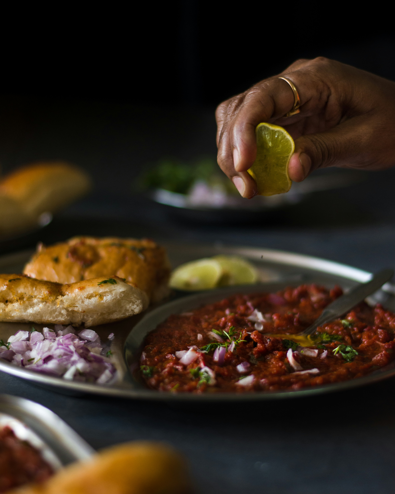

PaV BhaJI

Ingredients:
- 2 tbsp butter
- 1 onion, finely chopped
- 1 bell pepper, finely chopped
- 2 tomatoes, pureed
- 2 tbsp pav bhaji masala
- 1 1/2 cups mixed vegetables (potatoes, peas, carrots, cauliflower)
- 1 tbsp lemon juice
- Pav (bread rolls), buttered
Instructions:
- Cook the vegetables:Boil or steam the mixed vegetables until soft, then mash them roughly.
- Prepare the bhaji: Heat butter in a pan. Add chopped onions and bell peppers and cook until softened. Add tomato puree, pav bhaji masala, and salt. Cook for 5-7 minutes.
- Combine: Add the mashed vegetables, mix well, and cook for another 5 minutes. Add lemon juice and garnish with fresh coriander.
- Toast the pav: Butter the pav buns and toast them on a pan.
- Serve: Serve the pav bhaji with buttered pav on the side.